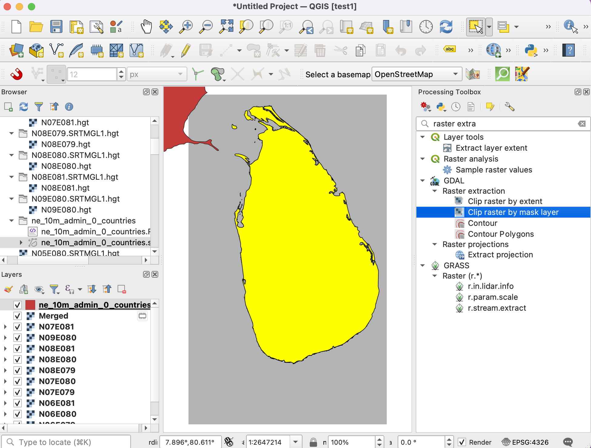

Werken met attributen (QGIS3)¶
Gegevens van GIS bestaan uit twee gedeelten - objecten en attributen. Attributen zijn gestructureerde gegevens over elk object. Deze handleiding laat zien hoe de attributen van een GIS vectorlaag te bekijken en basisquery’s op ze uit te voeren in QGIS.
Overzicht van de taak¶
De gegevensset voor deze handleiding bevat informatie over bewoonde plaatsen in de wereld. De taak is om een bevraging te doen en alle hoofdsteden in de wereld te zoeken die een bevolking hebben van meer dan 1 miljoen en de resulterende subset op te slaan als een bestand in de indeling GeoJSON.
Andere vaardigheden die u zult leren¶
Objecten van een laag selecteren met behulp van expressies.
De werkbalk Attributen gebruiken.
Geselecteerde objecten op een laag exporteren.
De gegevens ophalen¶
Natural Earth verschaft een gegevensset Populated Places . Download de simple (less columns) dataset.
Voor het gemak kunt u direct een kopie van de gegevensset downloaden vanaf de link hieronder:
ne_10m_populated_places_simple.zip
Gegevensbron [NATURALEARTH]
Procedure¶
Zoek in de QGIS Browser naar het bestand
ne_10m_populated_places_simple.zipen vergroot het. Selecteer het bestandne_10m_populated_places_simple.shpen sleep het naar het kaartvenster.

Een nieuwe laag
ne_10m_populated_places_simplezal nu worden geladen in QGIS en u zult veel punten zien die de bevolkte plaatsen in de wereld weergeven. De standaard weergave in het kaartvenster van QGIS geeft de geometrie van de laag weer. Elk punt heeft ook geassocieerde attributen. Laten we ze eens bekijken. Zoek naar de werkbalk Attributen. Deze werkbalk bevat veel handige gereedschappen om attributen van een laag te inspecteren, te bekijken, te selecteren en aan te passen.

Notitie
Als u de werkbalk niet ziet, kunt u die inschakelen met .
Klik op de knop Objecten identificeren op de werkbalk Attributen. Klik, als het gereedschap eenmaal is geactiveerd, op een punt in het kaartvenster. De geassocieerde attributen van dat punt zullen worden weergegeven in een nieuw paneel Identificatieresultaten. Als u klaar bent met het verkennen van attributen van verschillende punten kunt u op de knop Sluiten.

In plaats van het attribuut per object te bekijken kunnen we ze ook allemaal samen bekijken als een tabel. Klik op de knop Attributentabel openen op de werkbalk Attributen. U kunt ook met rechts klikken op de laag
ne_10m_populated_places_simpleen Attributentabel openen selecteren.

U kunt horizontaal scrollen en de kolom pop_max zoeken. Dit veld bevat de bevolking van van de geassocieerde plaats. U kunt tweemaal op de kolomkop klikken om de kolom in aflopende volgorde te sorteren.

Nu zijn we klaar om onze query op deze attributen uit te voeren. QGIS gebruikt SQL-achtige expressies om query’s uit te voeren. Klik op de knop Selecteer objecten m.b.v. reguliere expressie.

Vergroot, in het venster Select By Expression, het gedeelte Velden en waarden en dubbelklik op het label
pop_max. U zult zien dat het wordt toegevoegd aan het gedeelte van de expressie onder in het venster. Als u niet zeker bent van de waarden in het veld, kunt u klikken op de knop Alle unieke om te zien wat de huidige aanwezige waarden in de gegevensset zijn. Voor deze oefening zoeken we naar alle objecten die een inwoneraantal hebben van groter dan 1 miljoen. Voltooi dus de expressie zoals hieronder en klik op Objecten selecteren en dan op Sluiten.
"pop_max" > 1000000
Notitie
In de QGIS Expressiebouwer verwijst tekst tussen dubbele aanhalingstekens naar een veld en tekst tussen enkele aanhalingstekens naar een waarde tekenreeks.
U zult zien dat enkele rijen in de attributentabel nu zijn geselecteerd. Het label van het venster wijzigt ook en geeft het aantal geselecteerde objecten weer.

Sluit het venster van de attributentabel en ga terug naar het hoofdvenster van QGIS. U zult zien dat een subverzameling van de punten nu in geel wordt weergegeven. Dit is het resultaat van onze query en de geselecteerde punten zijn die waarvan de waarde van het attribuut
pop_maxgroter zijn dan1000000.

Laten we onze query bijwerken om een voorwaarde op te nemen die bepaalt dat de plaats ook een hoofdstad zou moeten zijn, in aanvulling op het inwoneraantal van meer dan 1 miljoen. U kunt de knop Objecten selecteren m.b.v. een reguliere expressie op de werkbalk Attributen om snel naar de expressiebouwer te gaan.

Het veld dat de gegevens bevat over hoofdstad of niet is adm0cap. De waarde
1geeft aan dat de plaats een hoofdstad is. We kunnen dit criterium toevoegen aan onze eerdere expressie met behulp van de operator and. Voer de expressie in zoals hieronder en klik op Objecten selecteren en dan op Sluiten.
"pop_max" > 1000000 and "adm0cap" = 1
Ga terug naar het hoofdvenster van QGIS. Nu zult u een kleinere subset van geselecteerde punten zien. Dit is het resultaat van de tweede query en geeft alle plaatsen weer uit de gegevensset die hoofdsteden zijn en ook een populatie hebben die groter is dan 1 miljoen.

Nu zullen we de geselecteerde objecten exporteren als een nieuwe laag. Klik met rechts op de laag
ne_10m_populated_places_simpleen ga naar

U kunt elke indeling kiezen die u wilt voor Indeling. Voor deze oefening zullen we
GeoJSONkiezen. GeoJSON is een op tekst gebaseerde indeling die breed wordt gebruikt in kaarten op het web. Klik op de knop … naast Bestandsnaam en voerpopulated_capitals.geojsonin als het uitvoerbestand.

De invoergegevens hebben veel kolommen. U kunt een subset van de originele kolommen kiezen voor het exporteren. Vergroot het gedeelte Velden om te exporteren en hun opties voor exporteren selecteren. Klik op Alles deselecteren en selecteer de kolommen
nameenpop_max. Klik op OK.

Een nieuwe laag
populated_capitalszal worden geladen in QGIS. U kunt de laagne_10m_populated_places_simpledeselecteren om die te verbergen en de punten op de nieuw geëxporteerde laag bekijken.

If you want to give feedback or share your experience with this tutorial, please comment below. (requires GitHub account)